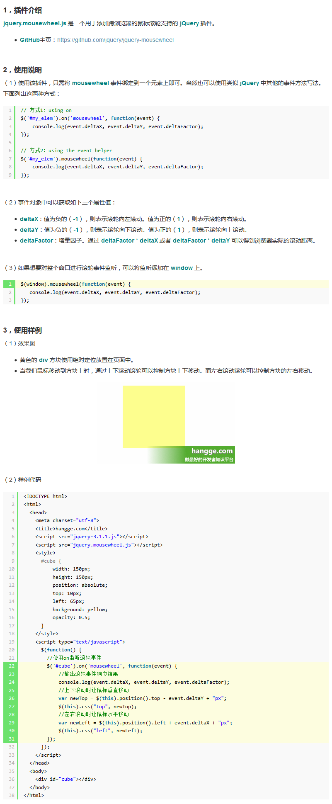

onwheel
- onwheel 事件在鼠标滚轮在元素上下滚动时触发。
- onwheel 事件同样可以在触摸板上滚动或放大缩小区域时触发（如笔记本上的触摸板）。
- onmousewheel已废弃，使用 onwheel事件替代
- 在 IE 浏览器中，只能通过 addEventListener() 方法支持 wheel 事件。 在 DOM 对象中没有 onwheel 属性。
IE 9.0+; chrome 31.0+; firefox 17.0+; Opera 18.0+; safari不支持
//HTML
<element onwheel="myScript">
//JavaScript
object.onwheel=function(){myScript};
object.addEventListener("wheel", myScript);
//Internet Explorer 8及更早 IE 版本不支持 addEventListener()方法
鼠标滚轮的兼容写法
//为#main添加鼠标滚轮事件
<div id="main"></div>
var outDiv = document.getElementById('main');
var addMouseWheelHandler = function(){
if(document.addEventListener){
document.addEventListener('mousewheel', MouseWheelHandler, false); //IE9, Chrome, Safari, Oper
document.addEventListener('wheel', MouseWheelHandler, false); //Firefox
document.addEventListener('DOMMouseScroll', MouseWheelHandler, false); //Old Firefox
}
else{
document.attachEvent('onmousewheel', MouseWheelHandler); //IE 6/7/8
}
},
removeMouseWheelHandler = function(){
if(document.addEventListener){
document.removeEventListener('mousewheel', MouseWheelHandler, false); //IE9, Chrome, Safari, Oper
document.removeEventListener('wheel', MouseWheelHandler, false); //Firefox
document.removeEventListener('DOMMouseScroll', MouseWheelHandler, false); //old Firefox
}
else{
document.detachEvent('onmousewheel', MouseWheelHandler); //IE 6/7/8
}
},
stopDefault = function(e){
//W3C
if (e && e.preventDefault)
e.preventDefault();
//IE
else
window.event.returnValue = false;
return false;
},
//滚动后的处理函数
MouseWheelHandler = function(e){
stopDefault(e);
var step = 50; //滚动的距离
var e = e || window.event,
value = e.wheelDelta || -e.deltaY || -e.detail,
delta = Math.max(-1, Math.min(1, value));
if(delta < 0){//向下滚动鼠标滚轮,屏幕滚动条右移
outDiv.scrollLeft += step;
}
else{//向上滚动鼠标滚轮,屏幕滚动条左移
outDiv.scrollLeft -= step;
}
};
//调用
addMouseWheelHandler();
鼠标滚轮插件jquery.mousewheel.js详解
